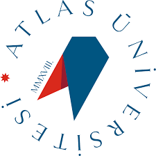

İletişim
Kişisel:
Siber Savunma:


Profil
Siber Güvenlik Meraklısı ve Yönetim Bilişim Sistemi Öğrencisi
Hakkında
Merhaba ben Okan Mert,
Kendimi bildim bileli teknolojiye hem ilgim vardı. Ancak bazı koşullardan dolayı çocukluğumda bu ilgimle pek de alakalı olamadım. 2021 yılında ilk kez programlamayla karşılaştım. Bu karşılaşma, bir YouTube kanalının CryEngine motoru ile nasıl oyun kodlanacağını gösterdiği bir video ile oldu. Daha sonra biraz araştırma yaparak Unity/C# teknolojilerini öğrenmeye karar verdim. İşin bilişim teknolojileri kısmı hoşuma gitmişti ama aynısını oyun geliştirme adına söyleyemeyeceğim. Daha sonra sırasıyla web/mobil geliştirme, yapay zeka ve veri analistliği gibi çeşitli alanlara baktıktan sonra kariyer rotamı belirledim. Bu süreç yaklaşık 2 yılımı aldı.
2023 yılının son aylarına doğru siber güvenlik alanında uzmanlaşmaya karar verdim. Teknolojiye ilgim vardı, fakat işin bir de siber boyutunu, yani arka planında neler işlediğini görünce ilgim daha da arttı. En basit dosya transferinde bile o kadar çok protokol ve mimari yapı kullanılıyor ki... Açıkçası benim gibi öğrenme meraklısı ve çapraz okumayı/anlamayı seven bir insan için bulunmaz bir bilgi hazinesi vardı. Şu anda, işin kırmızı takım ve mavi takım konularını öğrendikten sonra işin bir de mimari kısımlarını öğrenmek istiyorum.
Yukarıda yazdığım sebeplerden ötürü okumakta olduğun sağlık bölümünü bıraktım. Şimdi ise Yönetim Bilişim Sistemleri okuyorum.
Eğitim Bilgileri
Ahmet Yesevi Üniversitesi 2023-2027
Fakülte : Mühendislik Fakültesi
Bölüm : Yönetim Bilişim Sistemleri
İstanbul-Kazakistan

İstanbul Atlas Üniversitesi 2021-2022
Meslek Yüksek Okulu
Dezenfeksiyon, Sterilizasyon ve Antisepsi Teknikerliği
İstanbul/Kağıthane
Not: Bu bölümü yarıda bırakıldı.

Deneyim
- Siber Savunma, dijital dünyanın güvenliğine odaklanan bir YouTube kanalıdır. Temel siber güvenlik konuları hakkında bilgilendirici ve pratik içerikler sunar.
Yetkinlikler
Bilgisayar Bilgisi
- Ağ Protokolleri
- Ağ Topolojisi/Bileşenleri
- Malware Bilgisi (Temel Düzey)
- Linux/Windows Komut Satırı
- Firewalls/Güvenlik Duvarları (Orta)
- Windows/Linux Yetki Yükseltme (Orta)
- Adli Bilişim(Temel/Orta)
- Kriptoloji (Orta)
- OWASP Web Top 10
Teknolojiler
- Python
- Bash-Script
- Nmap
- Burp Suite
- Metasploit
- WireShark
- Active Directory (Temel Düzey)
- Nessus (Temel Düzey)
- Autopsy
- HTML/CSS
Yabancı Dil
- İngilizce A2
İlgi Alanları
Strateji Video Oyunları
Yüzme
Tarih/Bilimsel Konularda Kitap ve Makale okumak
Detaylar
Ad:
Okan Mert
Soyad:
TAN
Yaş:
21
Adres:
Gaziosmanpaşa/İstanbul